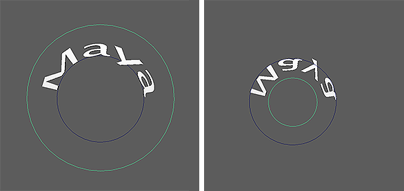

“曲线扭曲”(Curve Warp)变形器用于沿曲线拉伸对象或为对象设置动画。可以从多个不同位置访问它：
- 在“动画”(Animation)、“建模”(Modeling)和“绑定”(Rigging)菜单集中：
- 在 MASH 工具架中：单击“曲线扭曲”(Curve Warp)图标。
以下选项位于“曲线扭曲变形器”(Curve Warp deformer)节点的“属性编辑器”(Attribute Editor)中。
曲线扭曲
-
曲线(Curve)
-
显示用作输入的曲线。还可以使用鼠标中键将曲线拖入此字段，或者单击鼠标右键连接选定曲线。如果曲线已连接，还可以单击鼠标右键将其移除或显示在大纲视图中。
-
目标曲线(Aim Curve)
-
显示当
“目标”(Aim)设置为
“目标曲线”(Aim Curve)时几何体指向的曲线。还可以使用鼠标中键将曲线拖入此字段，或者单击鼠标右键连接选定曲线。如果曲线已连接，还可以单击鼠标右键将其移除或显示在
大纲视图中。

-
目标(Aim)
-
指定所变形对象的方向。选项包括：
- 自动法线(Auto Normals)：根据法线自动确定如何设置网格的方向。
- 曲线法线(Curve Normals)：在每个控制点上沿曲线的法线设置网格的方向。
- 目标曲线(Aim Curve)：将网格的方向设置为朝向指定曲线。
-
目标曲线模式(Aim Curve Mode)
-
指定当“目标”(Aim)设置为“目标曲线”(Aim Curve)时，将使用目标曲线的哪个方面确定几何体的方向。选项包括：
- U 值(U Value)：对输入曲线和目标曲线的相应 U 值进行采样，然后使用其间的线作为几何体的上方向向量。这种解算方法的速度最快。
- 最近点(Closest Point)：对输入曲线的每个 U 值进行采样时，该选项使用目标曲线上对应的最近 CV 确定几何体的上方向向量。此方法更易于使用，但速度比“U 值”(U Value)要慢。
-
对齐(Alignment)
-
指定相对于变形所沿曲线对齐网格的轴。
-
翻转轴(Flip Axis)
-
反转“对齐”(Alignment)轴。
-
封套(Envelope)
-
控制从网格的原始形状到其在曲线上的变形形状的衰减。使用该属性可在它们之间进行融合。
-
偏移(Offset)
-
确定沿曲线偏移网格的距离。增加该值将沿曲线移动网格。还可以将该值设置为小于 0 或大于 1，使网格继续超出曲线的起点/终点。
-
保持长度(Keep Length)
-
保持输入网格的长度。如果禁用此选项，则网格将始终拉伸以填充曲线的整个长度。
-
循环闭合曲线(Loop Closed Curves)
-
围绕曲线无限循环变形的对象，不断增加偏移值。
-
采样精确度(Sampling Accuracy)
-
为要黏着到的多边形对象确定曲线上的点投影数。值越高，对象更易于保持其原始形状。
网格缩放(Mesh Scaling)
-
长度缩放(Length Scale)
-
根据曲线长度百分比缩放网格。
-
最大缩放(Max Scale)
-
沿非长度轴缩放网格。
缩放曲线(Scale Curve)
该曲线图允许自定义“最大缩放”(Max Scale)的形状。
曲线旋转(Curve Rotation)
-
旋转(Rotation)
-
确定网格围绕曲线长度的总体旋转。
-
扭曲旋转(Twist Rotation)
-
确定围绕曲线长度应用于网格的附加扭曲量。
扭曲曲线(Twist Curve)
该曲线图允许自定义由“扭曲旋转”(Twist Rotation)所施加扭曲的形状。